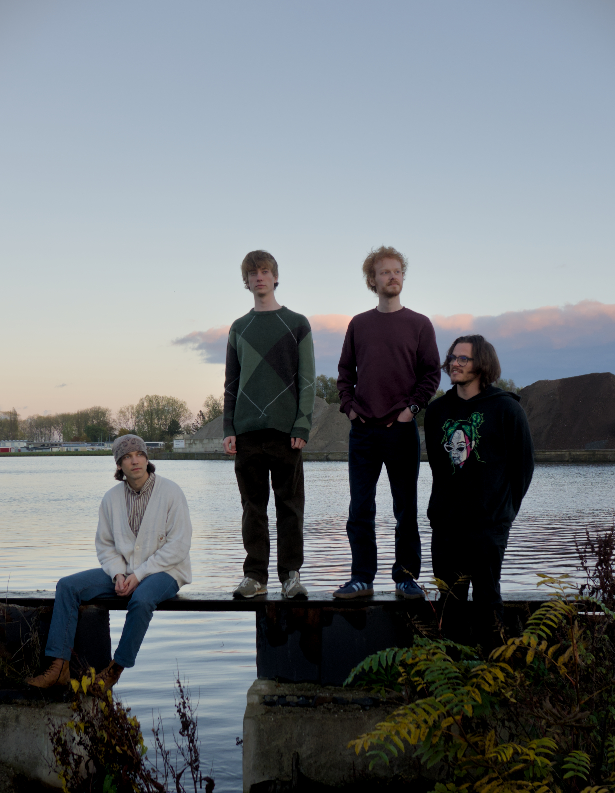

Happenstance.
ALTERNATIVE / INDIE ROCK — THE NETHERLANDS
Embrace the absurd.
DEBUT EP · JANUARY 2027
Happenstance announce their debut EP.
Groningen-based alternative/indie rock band Happenstance are set to release their debut EP The Reduction of a Self in January 2027. Across five tracks, melancholy and playfulness meet, with a quietly existential undertone.
The Reduction of a Self is a coming-of-age record about learning to live with questions that don't have answers.
Written with the struggles of a younger self in mind, the EP explores the different ways we respond when life stops making sense. Songs like Love Life and Why Do I Try dwell in the melancholy and dread of existential uncertainty, while Do It All Again, Situational and Who Wears the Crown turn towards restless rebellion and indulgence from the desire to take control.
And yet, neither giving in to the dread, nor fighting against it, quite offers a way out. Instead, the EP arrives at a quieter realisation: perhaps life isn't something we need to steer, explain, or even fully understand. Maybe, we can simply become part of and embrace its contradictions, allowing ourselves to think, feel, and change as we go.
At its heart, The Reduction of a Self is the record we wish we could have given our younger selves. To make those moments of uncertainty a little easier to live with.
Meet Happenstance.
Happenstance is a four-piece alternative/indie rock band from Drenthe and Groningen in the Netherlands. Drawing inspiration from the layered melancholy of Radiohead and the energy of Nothing But Thieves and Muse, the band combines unconventional rhythms, distinctive melodies and dynamic guitar-driven arrangements.
With lyrics exploring existentialism, hedonism and love, Happenstance balances sincerity with a playful edge.
MARIN — VOCALS / ACOUSTIC GUITAR
OSCAR — DRUMS
ERNESTS — BASS
TIES — ELECTRIC GUITAR

Get in touch.
For press enquiries, interviews, additional photographs or further information:
musichappenstance@gmail.com